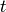
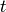
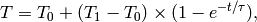
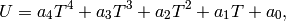
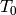
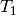
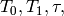
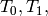
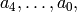

ops.calibration.leastsquare — Estimates the heating parameters¶
This module estimates a set of parameters that describe the development of the heating temperature over time for a given heating current, and the temperature sensor voltage for a given temperature. The results are then used by the CalibrationManager to estimate the progress of a heating stage, and to determine whether the heating temperature is close enough to its final value for a temperature measurement to be taken.
The module assumes that the heating temperature  at time  is
at time  is

and that the temperature sensor voltage for that temperature is

where  is the temperature at the beginning of the heating stage,
 is the final temperature for the heating current used, and
 and are constants.
and are constants.
The module then estimates  and the coefficients using scipy.optimize.leastsq().
The minimization is performed in a worker thread (LeastSquareThread) since it may take up to half a second, and would otherwise render the application unresponsive.
The LeastSquareThread Class¶
- class ops.calibration.leastsquare.LeastSquareThread(startingEstimates)¶
- Creates a new instance of this class. startingEstimates must be a Solution object that is usable as the starting point of the minimzation. Suitable Solutions can be optained from getFirstStartingEstimates() or getSubsequentStartingEstimates().
- LeastSquareThread.solution¶
- The most recent solution of the minimization, as a Solution object, or None if a solution has not yet been found. Read-only.
- LeastSquareThread.solutionsFound¶
- The number of solutions the thread has found so far. Read-only.
- LeastSquareThread.refreshData(times, voltages)¶
Updates the data the minimization is based on. The arguments are a sequences of times (measured from the start of the heating stage) and a sequence of the temperature sensor voltages at these times, which must have the same length.
This method can be safely called from the main thread. The sequences are copied before the method returns.
- LeastSquareThread.start()¶
- Starts the thread. A thread that has been stopped cannot be restarted.
- LeastSquareThread.stop()¶
- Stops the thread. It may take some time for the thread to actually terminate, and one last solution may be produced.
- LeastSquareThread.voltagesRequired¶
The smallest number of reported temperature sensor voltages great enough to perform a useful estimation. If fewer voltages are passed to refreshData(), they are ignored.
This is a class attribute, but it can be set on an instance to override the default value. If the value is set too low, an exception may be raised during minimization.
The Solution Named Tuple¶
- class ops.calibration.leastsquare.Solution¶
- A named tuple that contains the solution of a minimzation, or the starting
estimates for one. The items in this tuple are startingTemperature,
finalTemperature, tau, and coefficients, where the first three are
 and as defined above, and the last is an
unnamed tuple containing  in that order.
Starting Estimates¶
- ops.calibration.leastsquare.getFirstStartingEstimates(current)¶
- Creates a Solution that contains suitable values for it to be usable as the as the starting point of the minimzation in the first heating stage of the calibration procedure. current is the heating current used for that stage.
- ops.calibration.leastsquare.getSubsequentStartingEstimates(previousTemperature, previousSolution, extraCurrent)¶
- Creates a Solution that contains suitable values for it to be usable as the as the starting point of the minimzation in a heating stage other than the first. previousTemperature is the heating temperature measured at the end of the previous heating stage, previousSolution is the solution of the minimization performed in the previous heating stage, and extraCurrent is the heating current in the new heating stage minus the heating current in the previous heating stage.
- ops.calibration.leastsquare.startingTemperatureStartingEstimate¶
- A suitable starting estimate for the starting temperature. Used by getFirstStartingEstimates()
- ops.calibration.leastsquare.finalTemperatureStartingEstimateFactor¶
- A factor by which the heating current used in a heating stage can be multiplied in order to get a suitable starting estimate for the final temperature in that stage. Used by getFirstStartingEstimates() and getSubsequentStartingEstimates().
- ops.calibration.leastsquare.tauStartingEstimate¶
- A suitable starting estimate for tau. Used by getFirstStartingEstimates().
- ops.calibration.leastsquare.coefficientsStartingEstimate¶
- A tuple that contains suitable starting estimates for the coefficients. Used by getFirstStartingEstimates()